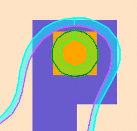
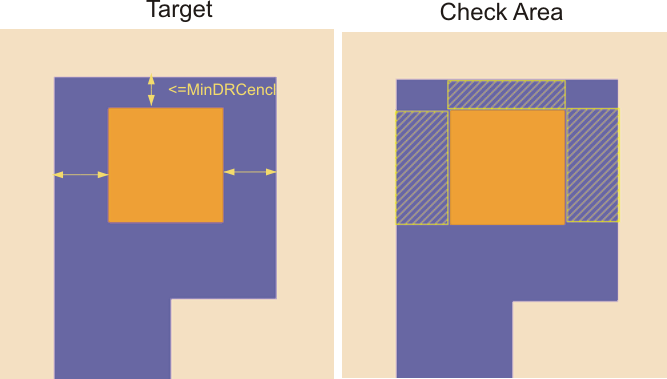
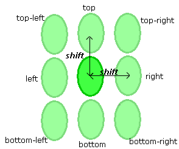

MinOverlayCheck
Usage
Syntax 1
MinOverlayCheck
-layer1 enclosed_layer_name
-layer2 surrounding_layer_name
-subwindow expr_number
[-subwindow2 expr_number]
-minDRCencl encl
-minLFDencl encl
[-overlayError shift]
[-security {no | yes}]
[-markerLayer layer_name]
[-referenceLayer1 “%drawn” | “%retarget” | layer_name]
[-referenceLayer2 “%drawn” | “%retarget” | layer_name]
[-anchorLayer1 “%reference” | “%drawn” | “%retarget” | layer_name]
[-anchorLayer2 “%reference” | “%drawn” | “%retarget” | layer_name]
[-layer1ContourCondition contour_condition1]
[-layer2ContourCondition contour_condition2]
[-property Min]
[-checkName cName]
[-priority cPriority]
[-indexFilter value]
[-minMarkerWidth width_size]
[-suppressPVI {no | yes}]
[-comment comment_text]
[-classify handle]
[-appendMarker extra_markers_layer]
[-contour1Handle contour1_handle -contour2Handle contour2_handle]
{-database db_name | -layerOut return_layer_name
| -database db_name -layerOut return_layer_name}
Syntax 2
MinOverlayCheck
-layer1 layer1_name -layer2 layer2_name
-pdkCheckName check_template
-database db_name
[additional_options]
Description
Performs an enclosure check between two PV-bands on separate layers where the target layer geometries are oriented such that the geometry on -layer2 surrounds the geometry on -layer1 and the enclosure distance is less than or equal to -minDRCencl. If -markerLayer is specified, the check is limited to PV-band data that lies inside geometries on -markerLayer. This check is designed to identify alignment as well as overlay errors between metal and poly as well as enclosed vias and contacts.
MinOverlayCheck (MOC) measures the distance between the outer edge of the PV-band for ‑layer1 and the inner edge of the PV-band for -layer2. An error is flagged if this distance is less than or equal to -minLFDencl.
This check is not commutative. Results differs if -layer1 and -layer2 are reversed.

This function writes all errors discovered by the check to the Calibre nmDRC RDB. It also associates a score to each error and writes it to the Check Database specified by the -database argument. The score is calculated as the area of the model-based violation.
If used with a PDK, this function calls a MinOverlayCheck defined in the PDK and runs it for the specified layers, writing check results to the specified database.
Arguments
- -layer1 enclosed_layer_name
Required keyword and argument defining the name of the first layer you are checking. Geometries on this layer are enclosed by -layer2. This is typically a via or contact layer.
- -layer2 surrounding_layer_name
Required keyword and argument defining the name of the second layer you are checking. Geometries on this layer surround geometries on -layer1. This is typically a metal or poly layer.
- -subwindow expr_number
Required keyword and argument defining the process variation experiment to which this check applies. You must reference individual process variation experiments by their positions in the -opticalSpanList and -doseSpanList arguments to the PVband command used to generate the PV-band data being checked. Thus, expr_number refers to an index to a list of experiments.
Setting expr_number to a value of “expr_number_shift” causes the check to operate on a certain shift for a double-patterned PV-band with overlay (for example, -subwindow 1_N causes the check to only run on the north shift).
- -subwindow2 expr_number
Optional keyword and argument defining the process variation experiment to which layer 2 in this check applies. You must reference individual process variation experiments by their positions in the -opticalSpanList and -doseSpanList arguments to the PVband command used to generate the PV-band data being checked. Thus, expr_number refers to an index to a list of experiments. Setting expr_number to a value of “subwindow#_shift” causes the check to operate on shifts of an overlaid double-patterned PVband. If not specified, the check uses the value given to the -subwindow keyword by default.
In the following example, the check calculates the distance between a north shift in the contact layer and a south shift in the poly layer:
LFD::MinOverlayCheck -layer1 contact -layer2 poly -minDRCencl 0.05 \ -minLFDencl 0.04 -overlayError 0.01 -subwindow 1_N \ -subwindow2 1_S -checkName MOC_1 -property min \ -database $lfdErrorDatabase- -minDRCencl encl
Required keyword and argument used to constrain the checks to those areas where problems are most likely to occur. The function ignores areas where the distance between the outer edge of the geometry on -layer1 and the inner edge of the geometry on ‑layer2 and the enclosure distance is greater than -minDRCencl.

- -minLFDencl encl
Required keyword and argument defining the enclosure threshold value between the outer edge of -layer1 and the inner edge of -layer2. PV-band geometries whose external PV-band edges are <= encl microns away from the internal edge of the PV-band for the surrounding geometry are flagged as an error.
- -overlayError shift
Optional keyword and argument defining a shift distance, expressed as a real number. The check evaluates PV-bands in the original position shifted by the specified amount. The shift distance represents the maximum distance by which to expect -layer2 to be misaligned in respect to -layer1.
The check simulates misalignment by shifting polygon formed inside the inner edge of a ‑layer2 PV‑band by the specified distance in eight directions: top, bottom, left, right, top‑left, top‑right, bottom‑left and bottom‑right.

- -security {no | yes}
Optional argument defining security privileges. If set to “yes”, the setup file is encrypted in the transcript.
- -markerLayer layer_name
Optional keyword and argument used to constrain the check to those contours that lie within polygons on layer_name. The function ignores areas outside polygons on this layer.
A -layerOut layer or a derivation of a -layerOut layer should not be used as the input to ‑markerLayer, or a circular layer definition results.
- -referenceLayer1 “%drawn” | “%retarget” | layer_name
Optional keyword and argument to have the check measurements calculated on a different layer than the first drawn layer to the checks for which the PV-bands have been generated.
You can provide one of the following options as an input to this argument:
“%drawn” — Default. The check measurements are calculated with respect to the drawn layer input to the check with -layer1.
“%retarget” — The check measurements are calculated with respect to the retarget layer of the input drawn layer of the check. The check stores the retarget layer name in the PDK.
layer_name — You can define any layer name to have the check measurements done with respect to it. This argument can be used when no PDK is used, and you know the name of the retarget layer.
- -referenceLayer2 “%drawn” | “%retarget” | layer_name
Optional keyword and argument to have the check measurements calculated on a different layer than the second drawn layer to the checks for which the PV-bands have been generated.
You can provide one of the following options as an input to this argument:
“%drawn” — Default. The check measurements are calculated with respect to the drawn layer input to the check with -layer2.
“%retarget” — The check measurements are calculated with respect to the retarget layer of the input drawn layer of the check. The check stores the retarget layer name in the PDK.
layer_name — You can define any layer name to have the check measurements done with respect to it. This argument can be used when no PDK is used, and you know the name of the retarget layer.
- -anchorLayer1 “%reference” | “%drawn” | “%retarget” | layer_name
Optional keyword and argument to have the output error markers from the checks anchored on a different layer than the first drawn layer of the checks, and different from the reference layer input to the check.
You can provide one of the following options as an input to this argument:
“%reference” — Default. The output error markers are anchored to the layer input to -referenceLayer1.
“%drawn” — The output error markers of the check are anchored to the drawn layer input to the check with -layer1.
“%retarget” — The output error markers of the check are anchored to the retarget layer of the input drawn layer of the check. The check stores the retarget layer name in the PDK.
layer_name — You can define any layer name to have the output error markers anchored to it. This argument can be used when no PDK is used, and you know the name of the retarget layer.
- -anchorLayer2 “%reference” | “%drawn” | “%retarget” | layer_name
Optional keyword and argument to have the output error markers from the checks anchored on a different layer than the second drawn layer of the checks, and different from the reference layer input to the check.
You can provide one of the following options as an input to this argument:
“%reference” — Default. The output error markers are anchored to the layer input to -referenceLayer2.
“%drawn” — The output error markers of the check are anchored to the drawn layer input to the check with -layer2.
“%retarget” — The output error markers of the check are anchored to the retarget layer of the input drawn layer of the check. The check stores the retarget layer name in the PDK.
layer_name — You can define any layer name to have the output error markers anchored to it. This argument can be used when no PDK is used, and you know the name of the retarget layer.
- -layer1ContourCondition contour_condition1
Optional keyword and argument to define -layer1 check on any defined contour condition in the PV-band, as opposed to only on the inner or outer PV-band contours.
You can provide one of the following options as an input to this argument:
min — Specifies the command works on the inner PV-band contour.
max — Specifies the command works on the outer PV-band contour.
integer — This integer is the order of the experiment in the subwindow. In the LFD::PVband command, by default subwindows are assumed to be constructed as extensions to previously-created subwindows, so the order of experiments is counted from the first subwindow. If the LFD::PVband -independentWindows option is set, the order of experiments is only counted in the defined subwindow.
process condition list — This must be an ordered list, with 3, 4, 5, 6, 8, or 10 elements defining an explicit process condition. The list must be supplied as follows:
{optical1 dose1 size1 [resist1 etch1] [optical2 dose2 size2 [resist2 etch2]]}
These values must define a process condition (dose and focus settings) that is one of the conditions evaluated by the LFD::PVband or LFD::RegisterContour commands for the layer.
- -layer2ContourCondition contour_condition2
Optional keyword and argument to define -layer2 check on any defined contour condition in the PV-band, as opposed to only on the inner or outer PV-band contours.
You can provide one of the following options as an input to this argument:
min — Specifies the command works on the inner PV-band contour.
max — Specifies the command works on the outer PV-band contour.
integer — This integer is the order of the experiment in the subwindow. In the LFD::PVband command, by default subwindows are assumed to be constructed as extensions to previously-created subwindows, so the order of experiments is counted from the first subwindow. If the LFD::PVband -independentWindows option is set, the order of experiments is only counted in the defined subwindow.
process condition list — This must be an ordered list, with 3, 4, 5, 6, 8, or 10 elements defining an explicit process condition. The list must be supplied as follows:
{optical1 dose1 size1 [resist1 etch1] [optical2 dose2 size2 [resist2 etch2]]}
These values must define a process condition (dose and focus settings) that is one of the conditions evaluated by the LFD::PVband or LFD::RegisterContour commands for the layer.
Note:This switch is useful when variations between layers are well-controlled, and you are interested in considering process variations of one layer over the nominal behavior of another.
- -property Min
Optional keyword and argument specifying whether or not the check should save error measurement data to the RDB database. When “-property Min” is specified, the check reports the minimum change in width measured for the feature. By default, property values are not saved.
- -checkName cName
Optional keyword and argument specifying the name to use for the check in the RDB. If not specified, the check in the RDB is assigned a system-generated name as defined in Table 1. Use this keyword to avoid name collisions when performing multiple checks of this type.
- -priority cPriority
Optional keyword and argument specifying a priority for this check. If not specified, the check in the RDB is assigned a system-generated priority based on the -subwindow value and default ranking of 2, as defined in Table 2. cPriority must be an integer value.
- -indexFilter value
Optional keyword and value used to filter out inconsequential errors. Only errors having an index greater than or equal to this value are written to the Check Database.
The index is defined as:

where:


For this check, the area of interest is defined relative to overlay area.
- -minMarkerWidth width_size
Optional keyword and argument defining the minimum width for error markers sent to the Check Database. Any error for which the error marker is smaller than this width is ignored. width_size must be specified in user units (um). By default, width_size is 0. This option allows you to remove thin width error markers from Calibre LFD check results, as thin, long errors can negatively affect Calibre LFD runtime.
- -suppressPVI { no | yes}
Optional keyword and argument specifying whether or not to suppress calculation of PVI. When “-suppressPVI yes” is specified, the check suppresses calculation of PVI. By default, PVI calculation is not suppressed.
- -comment comment_text
Optional keyword and argument used with -database for defining the comment text to be reported in the RDB if the check encounters a violation of this type. If not specified, the comment for a MOC violation is “Minimum Overlay Violation: Increase the area of the enclosure layer.”
The comment_text must be a single string, so comments containing spaces must be enclosed in braces. For example:
-comment {This is my comment.}- -classify handle
Optional keyword and argument used to define a handle to point to an LFD::ClassifyConfig object.
- -appendMarker extra_markers_layer
Optional keyword and argument used to add the polygons in the extra_markers_layer layer to the output of the check. The output retains the properties on the extra_markers_layer layer supported by the check. This option is not allowed for checks that are tied to an LFD::StructureOptimizer.
- -contour1Handle contour1_handle
Optional keyword and argument specifying the name of the first layer used to perform Calibre LFD checks on specific contour handles. This option is for use with the contour handle generated using the Customizable PV-Bands flow.
- -contour2Handle contour2_handle
Optional keyword and argument specifying the name of the second layer used to perform Calibre LFD checks on specific contour handles. This option is for use with the contour handle generated using the Customizable PV-Bands flow.
- -database db_name
Required keyword and argument defining the RDB to which spacing values for violations identified by the check are written. You must indicate where the violations are written by specifying -database or -layerOut or both.
- -layerOut return_layer_name
Required keyword and argument defining the name of a derived layer to which the violations identified by the check are written. This layer exists in memory and can be referenced in subsequent Calibre nmDRC operations. You must indicate where the violations are written by specifying -database or -layerOut or both.
A -layerOut layer or a derivation of a -layerOut layer should not be used as the input to ‑markerLayer, or a circular layer definition results.
- -pdkCheckName check_template
Required keyword and argument specifying the name of the check template defining how this check is performed.
- additional_options
Optional keywords and arguments allowed only when the security settings within the PDK permit you to modify the settings for this command. These can be any of the options for the non-PDK MinOverlayCheck command. Any additional options specified overrides the options defined within the PDK.
Examples
Verify that all contacts enclosed by poly have an enclosure value of at least 0.055 across all the conditions specified by subwindow 1. All violations have an original geometric separation value of less than or equal to 0.10 and are reported to minOverlayCheck.rdb:
LFD::MinOverlayCheck -layer1 contact -layer2 poly -subwindow 1 \
-minDRCencl 0.10 -minLFDencl 0.055 -database minOverlayCheck.rdb